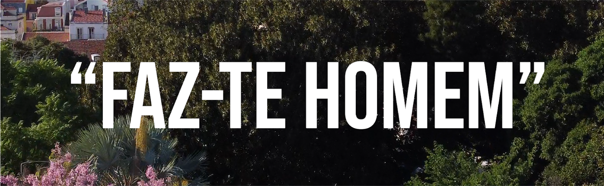
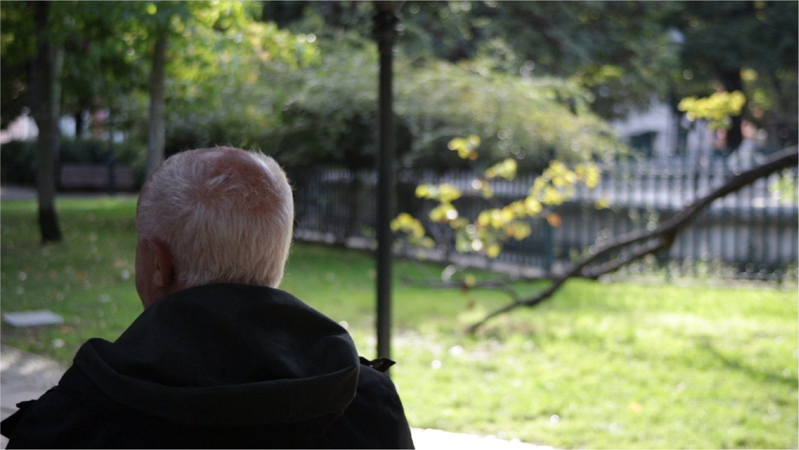
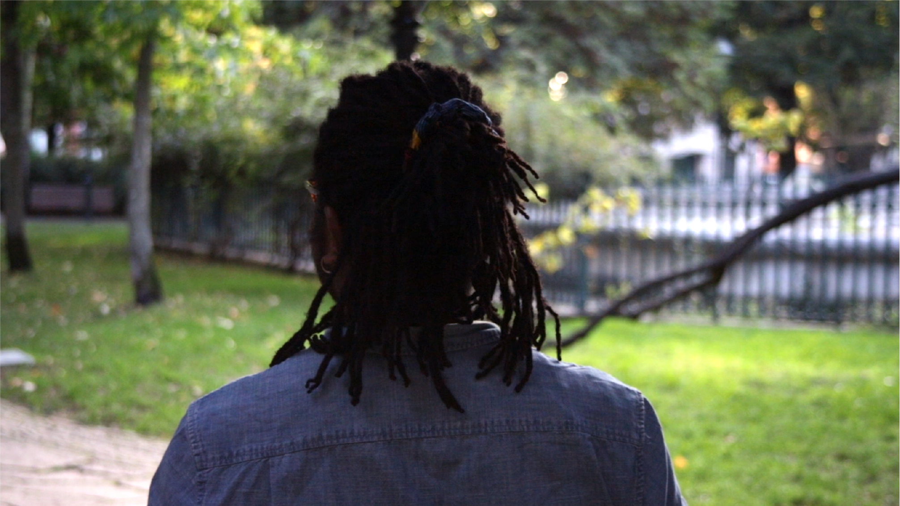
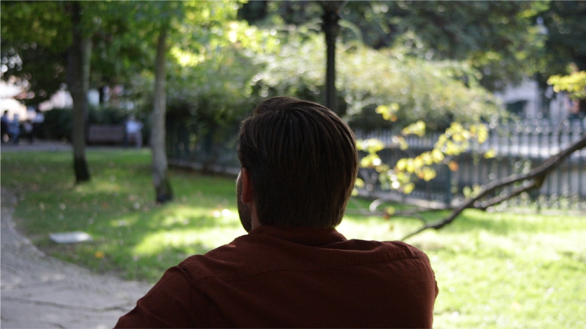

Adobe Illustrator
Adobe Premiere
Adobe Photoshop




The Project (2021)
For my high school documentary project, we were given the freedom to choose any theme and had two weeks to create a video. Our group decided to focus on the theme "Boys Don't Cry," which we titled "Faz-te Homem" (meaning "Be a Man" in Portuguese. It is a common expression used in Portugal to encourage people to act with courage and responsibility). We chose this theme to explore male sensitivity, shedding light on how men often feel pressured to hide their emotions due to societal expectations. The project aimed to challenge the traditional belief that men should be stoic and not show vulnerability. We wanted to create a conversation around the importance of emotional openness, particularly among men.
To bring this idea to life, we filmed in a garden in Lisbon, where we interviewed several men. We asked them two simple but profound questions: "When was the last time you cried?" and "Do you feel the need to hide your emotions as a man?" To respect their anonymity and help them feel comfortable sharing their experiences, we filmed them from behind, ensuring that their identities remained concealed. This approach not only gave them the freedom to speak openly but also emphasized that these struggles with expressing emotions are universal, rather than personal or isolated experiences.